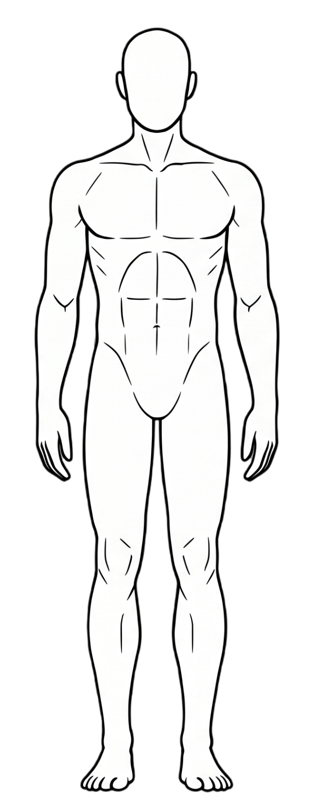

환부를 클릭해 주세요!

목 (Neck)
최근 겪고 있는 증상을 선택해 주세요
어깨 (Shoulder)
최근 겪고 있는 증상을 선택해 주세요
척추 (Spine)
최근 겪고 있는 증상을 선택해 주세요
골반 (Pelvis)
최근 겪고 있는 증상을 선택해 주세요
팔꿈치 (Elbow)
최근 겪고 있는 증상을 선택해 주세요
손목 (Wrist)
최근 겪고 있는 증상을 선택해 주세요
무릎 (knee)
최근 겪고 있는 증상을 선택해 주세요
추천 재활 루틴
전체보기당신의 통증을 가장 잘 이해하는 웹사이트.
국가공인 건강운동관리사의 임상 경험과 스포츠 역학을 바탕으로 가장 정확한 재활 솔루션을 제공합니다. 사용자의 불편함을 가장 먼저 생각하는 퍼블리셔의 고민이 담겨있습니다.
퍼블리셔 조대성
일상 자세 교정 가이드
통증은 사소한 습관에서 시작됩니다. 바른 자세를 알아보아요.